🧪
試薬在庫管理システム
取扱説明書
バーコード（独自 / GS1-128）対応 試薬在庫・発注・使用管理
第 1 版
目次
- はじめに（システム概要）
- 動作環境とログイン
- ユーザー権限と共通操作
- ホーム画面
- 入庫登録
- 出庫登録
- 発注
- 在庫管理
- 使用期限
- 使用終了日登録
- バーコード印刷
- 履歴（入庫・出庫・発注）
- 試薬管理台帳
- マスター編集（管理者）
- 操作ログ（管理者）
- 設定（管理者）
- パスワード変更
- 用語集
- 困ったときは（FAQ）
1. はじめに（システム概要）
本システムは、臨床検査・研究などで使用する試薬の在庫・発注・入庫・出庫・使用（開始／終了）を一元管理するWebアプリケーションです。ブラウザから操作し、バーコードによる正確でスピーディーな入出庫を実現します。
主な特長
- バーコード対応：商品ごとに発行する「独自バーコード」と、メーカー添付の「GS1-128（JAN・ロット・使用期限入り）」の両方に対応します。
- 問屋ごとの発注・入庫：問屋を選択してから作業する運用で、取り違えを防ぎます。
- 使用期限・在庫僅少の見える化：期限切れ・期限間近・在庫僅少をホームや使用期限画面で確認できます。
- 試薬管理台帳：精度管理対象試薬の入庫〜使用開始／終了を台帳として出力できます。
- 操作ログ：登録・更新・削除・印刷・CSV出力などの操作を記録します（管理者が閲覧）。
用語（先に覚えておくと便利）
| 用語 | 意味 |
|---|
| 梱包数 | 1梱包（1箱）に含まれる本数。マスターで設定します。 |
| バラ数 | 本数単位の数量。「梱包数 × 梱包」でバラ数になります。 |
| 発注予定 | これから発注する（未発注の）明細。 |
| 入庫予定 | 発注済みで、まだ入庫していない残り分。 |
| 独自バーコード | 本システムが入庫時に発行する、1本ごとの管理用バーコード。 |
2. 動作環境とログイン
動作環境
- 推奨ブラウザ：Microsoft Edge / Google Chrome（最新版）
- バーコード読取：USB接続のバーコードリーダー（キーボード入力方式）
- ラベル印刷：感熱ラベルプリンター（例：Brother QL シリーズ、52×29mm ラベル）
ログイン
- ブラウザでシステムのURLを開きます。
- ログインID・パスワードを入力し「ログイン」を押します。
- 権限に応じたメニューが表示されます。
初期パスワードは導入時の共通値です。導入後は「パスワード変更」画面（第17章）から各自変更してください。
ログアウト
画面右上の「ログアウト」を押します。一定時間操作がない場合も自動的にログアウトされます。
3. ユーザー権限と共通操作
権限（ユーザータイプ）
| タイプ | 使える機能 |
|---|
| 管理者 | すべての機能（下記に加え、マスター編集・操作ログ・設定・CSVインポート） |
| 一般 | 入庫・出庫・発注・在庫管理・使用期限・使用終了日・バーコード印刷・履歴・試薬台帳 |
| 問屋 | 入庫・発注のみ |
※「パスワード変更」「ホーム」は全ユーザー共通で使用できます。履歴の編集・削除は管理者・一般のみです。
画面共通の操作
- メニュー：画面上部のナビゲーションから各機能へ移動します。
- バーコード入力欄：枠が青く強調された欄です。リーダーで読み取るか手入力し、Enterで確定します。半角固定（IMEオフ）です。
- 備考欄：日本語入力（IMEオン）で自由に入力できます。
- CSV出力／印刷：一覧画面や台帳などに用意されています。
4. ホーム画面
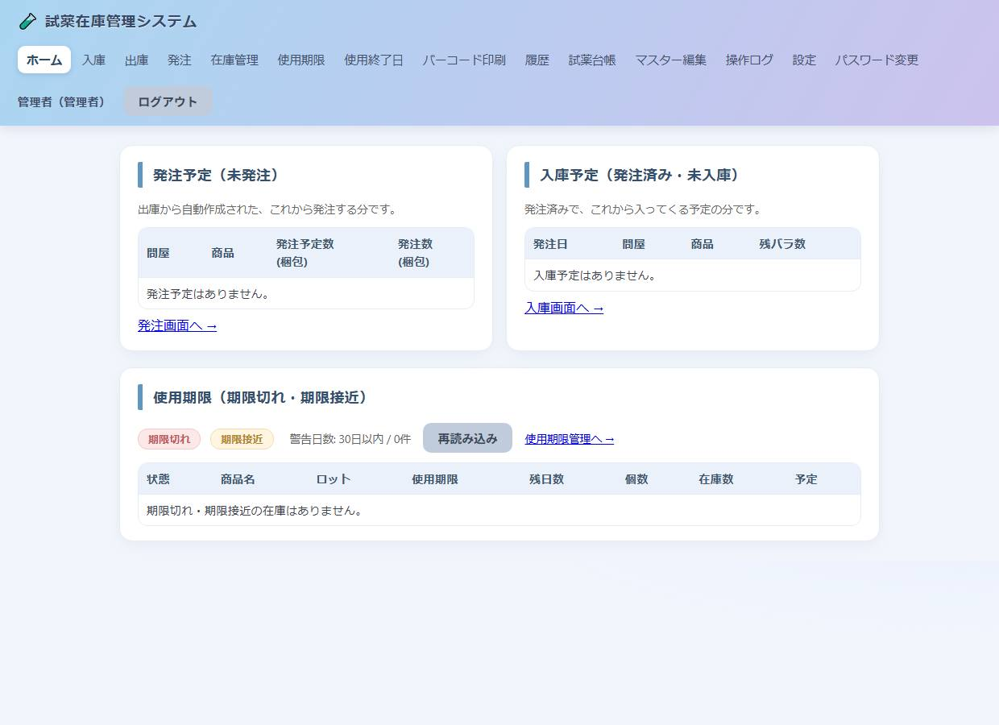
ホーム画面
ログイン直後に表示されます。日々の確認事項をまとめています。
- 使用期限情報：期限切れ・期限間近の在庫を一覧表示します。個数（そのロットの数）と在庫数（商品全体）を確認できます。
- 発注予定／入庫予定：該当がある商品にはバッジが表示されます。
期限間近の判定日数は「設定」画面で変更できます（既定は使用期限まで◯日以内）。
5. 入庫登録
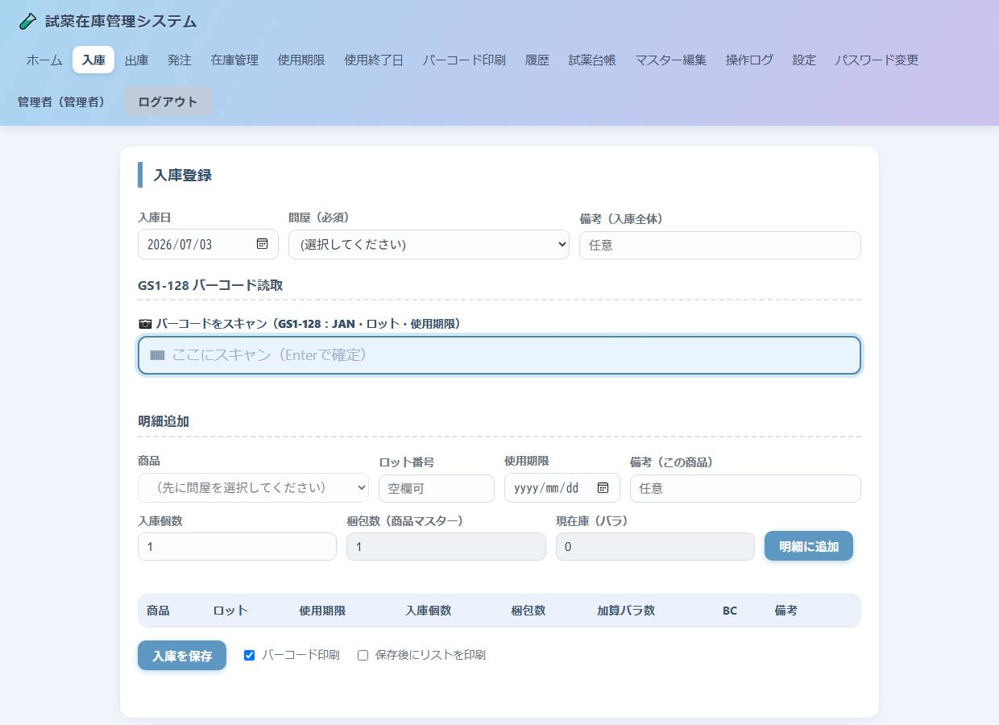
入庫登録画面
納品された試薬を在庫に登録します。管理者・一般・問屋が使用できます。
基本の流れ
- 入庫日を確認します（初期値は当日）。
- 問屋を選択します。問屋を選ぶまで商品は追加できません。
- 問屋を選ぶと、その問屋の入庫予定が表示されます。該当分にチェックを入れ「選択を明細に追加」で取り込めます。
- 個別に追加する場合は「明細追加」で商品を選び、ロット・使用期限・入庫数（梱包）を入力して「明細に追加」。
- 必要に応じて備考を入力します。
- 「登録」を押すと在庫へ反映されます。
GS1-128 バーコードでの入庫
「GS1-128 バーコード読取」欄でメーカーのバーコードを読み取ると、JAN・ロット・使用期限が自動で読み込まれ、対応商品の問屋が自動選択されます。
独自バーコードの印刷
入庫登録画面の「バーコード印刷」にチェックを入れて登録すると、入庫した本数分の独自バーコードを印刷できます（既定でチェックオン）。ラベルの体裁は「設定」画面の共有設定に従います。
問屋を選択すると、明細に追加できる商品はその問屋の商品だけに絞られます。手入力の入庫は、同じ商品の古い発注（入庫予定）から自動的に消し込まれます。
梱包数は商品マスターの値を使用します（入庫画面では変更できません）。
6. 出庫登録
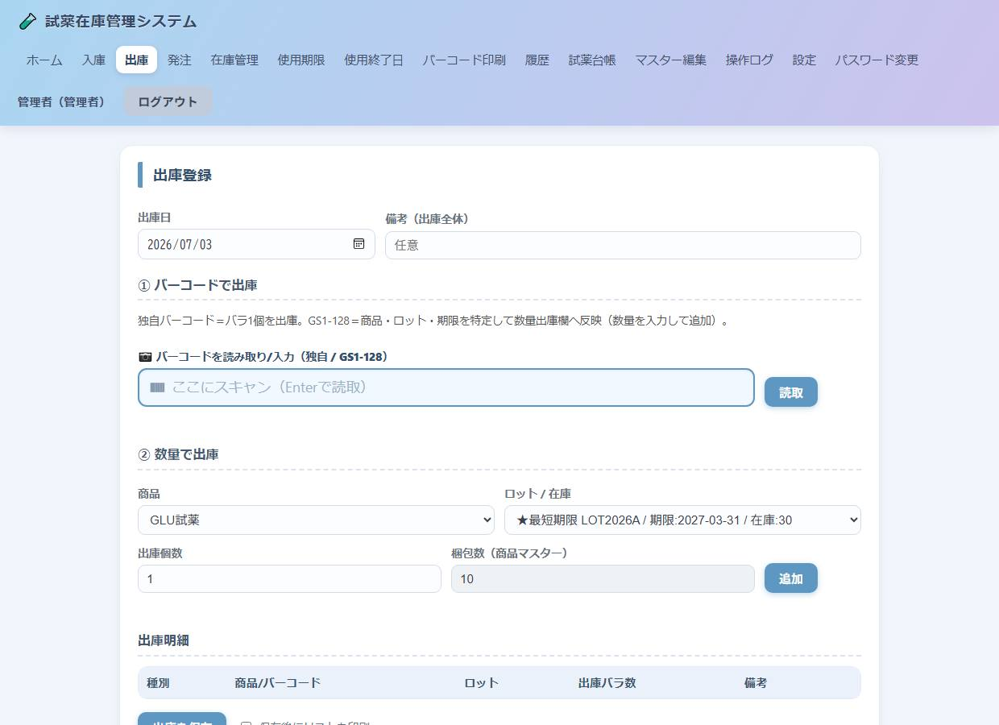
出庫登録画面
試薬の払い出し（使用開始）を登録します。管理者・一般が使用できます。
基本の流れ
- 出庫日を確認します（初期値は当日）。
- 独自バーコード、またはGS1-128バーコードを読み取ります。
- 数量（バラ数）を確認して明細に追加します。
- 「登録」で在庫から減算されます。
使用開始の記録
- 独自バーコード品：出庫すると、そのバーコードが「使用中（使用開始済み）」になります。
- バーコードを発行しない精度管理対象品：GS1（JAN）で識別し、使用記録が作成されます。
使用期限切れの試薬を出庫できるかどうかは、「設定」の「期限切れ出庫の許可」で切り替えられます。
7. 発注
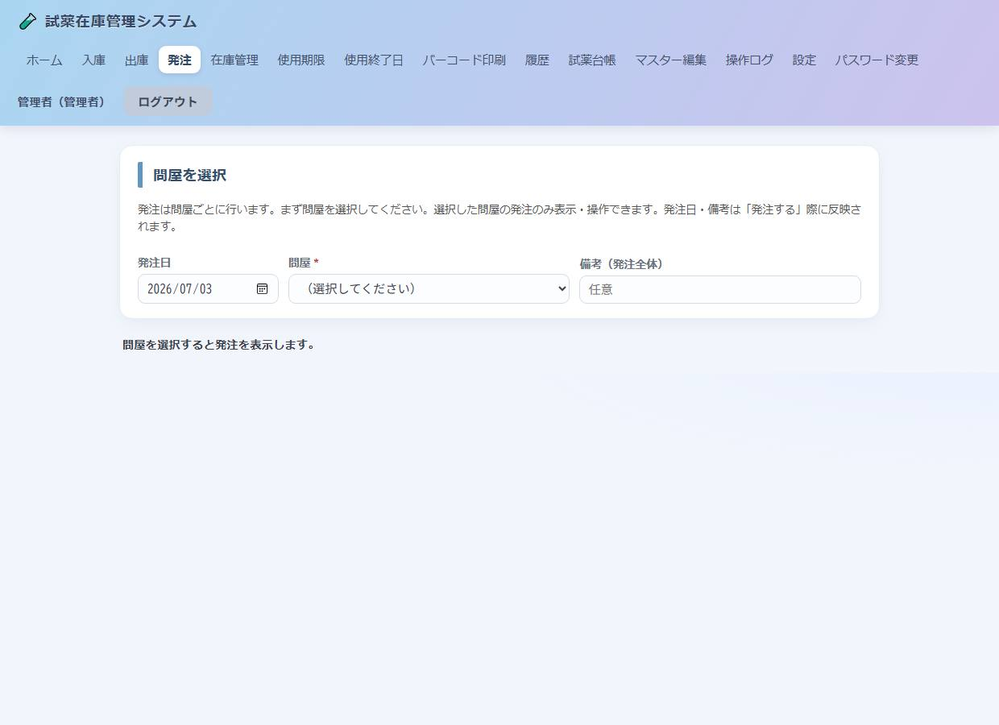
発注画面
問屋ごとに発注を作成します。管理者・一般・問屋が使用できます。
基本の流れ
- 発注日を確認し、問屋を選択します（選択するまで操作できません）。
- 選択した問屋の発注（未発注＝発注予定）が表示されます。
- 商品を追加します。バーコード読取、または「商品を選んで追加」から行います。
- 各商品の発注数（梱包）や備考を必要に応じて調整します。
- 「発注する」を押すと発注済みになります。チェックを入れておくと発注書を印刷できます。
発注数の見方
| 列 | 意味 |
|---|
| 発注バラ数 | 発注予定に積み上がっているバラ数（出庫実績などから算出）。 |
| 商品内容数 | 梱包数（1梱包の本数）。 |
| 発注推奨数（梱包） | システムが推奨する発注梱包数。 |
| 発注数（梱包） | 実際に発注する梱包数（編集可）。 |
保留と削除
- 保留：今回の発注から外します。「解除」で戻せます。保留した商品は発注しても発注予定として残ります。
- 削除：発注予定から取り除きます（未発注のみ）。
- 発注済みの商品ごとのキャンセル、発注全体のキャンセルも可能です（入庫済みは不可）。
8. 在庫管理
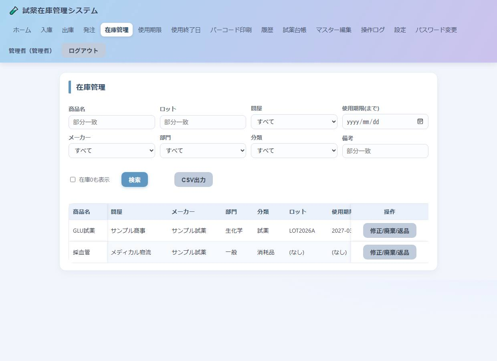
在庫管理画面
現在の在庫（ロット・使用期限ごと）を確認します。管理者・一般。
- 検索条件：商品名・問屋・メーカー・部門・分類・ロット・使用期限・備考などで絞り込めます。
- 在庫0も表示：チェックで在庫ゼロの行も表示します。
- 横スクロール：多数の列を表示できます。商品名と操作列は固定されます。
- CSV出力：表示中の条件で一覧をCSV出力できます（操作ログに記録されます）。
9. 使用期限
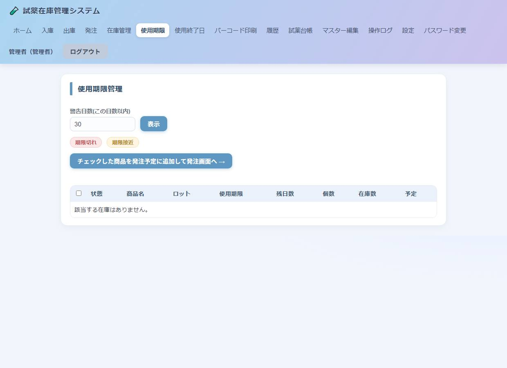
使用期限画面
期限切れ・期限間近の試薬を管理します。管理者・一般。
- 色分け：期限切れ・期限間近を淡い色で区別します。
- 個数／在庫数：個数はそのロット・期限の数量、在庫数は商品全体の合計です。
- 発注予定／入庫予定：該当がある場合バッジで表示します。
- チェックして発注：チェックした商品を発注予定に追加し、発注画面へ移動できます。
10. 使用終了日登録
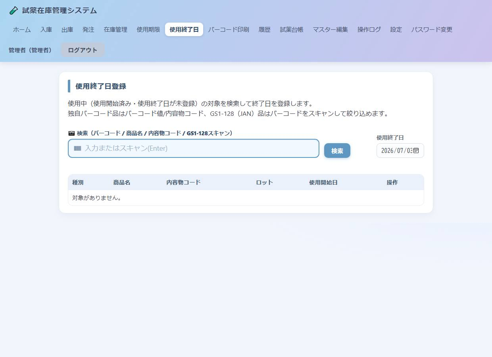
使用終了日登録画面
使用を終えた試薬の「使用終了日」を登録します。管理者・一般。
- 対象の独自バーコードを読み取る、または使用中の一覧から対象を選びます。
- 使用終了日を入力して登録します。
登録すると試薬管理台帳の「使用終了日」に反映されます。
11. バーコード印刷
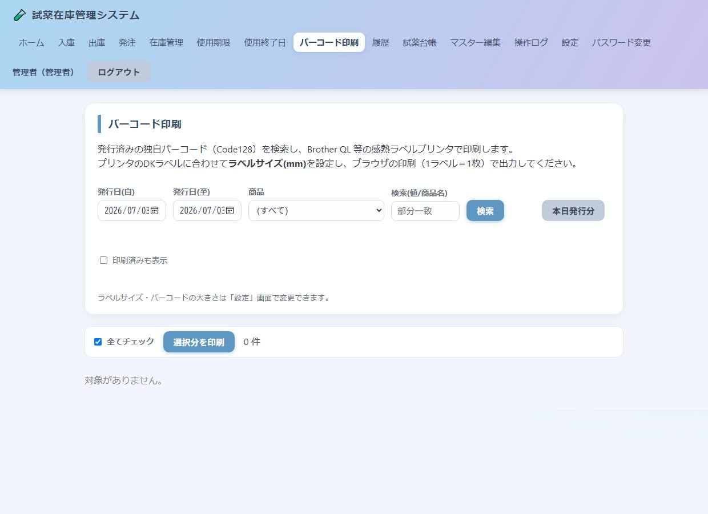
バーコード印刷画面
発行済みの独自バーコードを印刷（再発行）します。管理者・一般。
- 絞り込み：発行日・商品・キーワードで対象を検索します。
- 全てチェック：一覧のすぐ上のチェックで一括選択できます。
- 印刷済みの扱い：既定では印刷済みを表示しません。「印刷済みも表示」で表示できます。印刷すると印刷済みになります。
ラベルのサイズや文字サイズ（バーコード情報／名称／ロット・期限・No.）は「設定」画面で調整します。ラベルには印刷日時は印字されません。
削除した入庫のバーコードは「無効」となり、同じ番号が再利用されることはありません（重複防止）。
12. 履歴（入庫・出庫・発注）
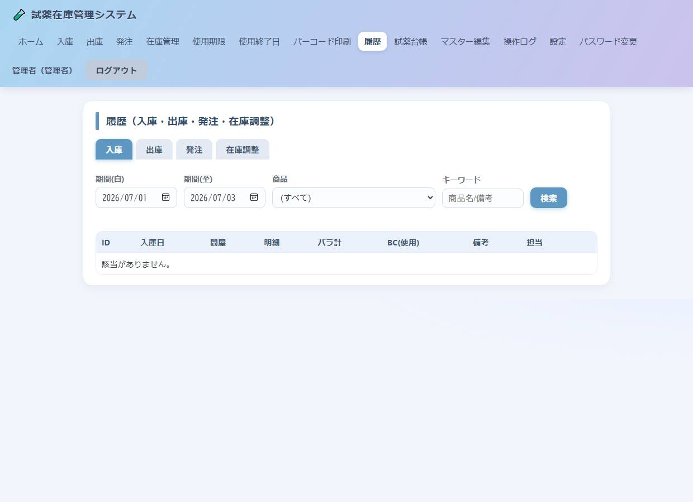
履歴画面
過去の入庫・出庫・発注を確認・訂正します。閲覧は一般以上、編集・削除は管理者・一般。
できること
- 閲覧：タブ（入庫／出庫／発注）で切り替え、期間・商品・キーワードで検索します。
- 編集：備考・日付の訂正ができます。数量・商品などの変更は「取消（削除）→ 再登録」で行います。
- 削除：在庫やバーコードの整合性が保てる場合のみ実行できます。保てない場合は理由が表示されます。
出庫済みのバーコードがある入庫や、発注に反映済みの出庫などは、整合性を守るため削除がブロックされます。表示された案内に従って先に関連処理を取り消してください。
13. 試薬管理台帳
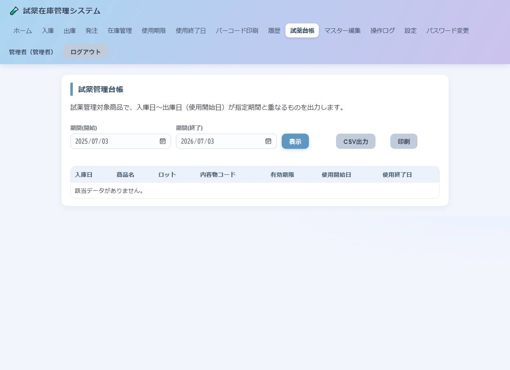
試薬管理台帳画面
精度管理対象試薬について、入庫〜使用開始／終了を台帳として出力します。管理者・一般。
- 期間（開始・終了）を指定して「表示」。
- 「CSV出力」でファイル保存、「印刷」で帳票印刷ができます。
台帳の項目：入庫日・商品名・ロット・内容物コード・有効期限・使用開始日・使用終了日。
※台帳の印刷物には印刷日時と会社名のみを印字します（住所・電話番号・担当者は印字しません）。
14. マスター編集（管理者）
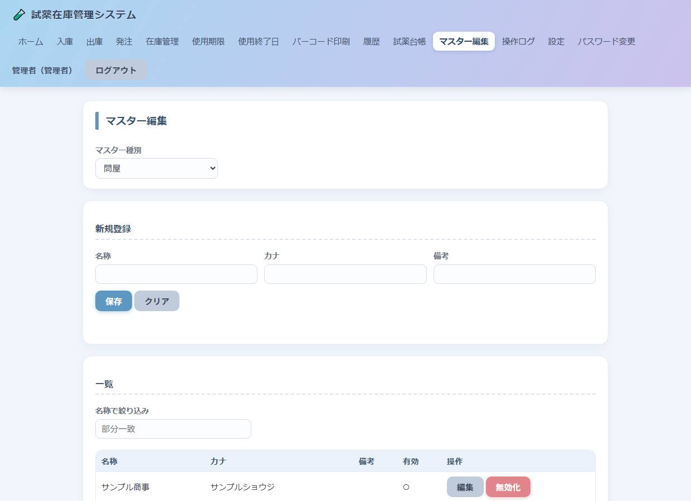
マスター編集画面
各種マスターを管理します。管理者専用です。
| マスター | 主な項目 |
|---|
| 商品 | 名称・部門・分類・精度管理対象など。一覧の「詳細」から商品詳細へ。 |
| 商品詳細 | 問屋・メーカー・梱包数・JANコード・バーコード発行有無・単価など。 |
| 問屋 / メーカー / 部門 / 分類 | 名称・カナ・有効フラグ。 |
| ユーザー | タイプ・氏名・ログインID・パスワード・有効フラグ。 |
ユーザーのパスワードは管理者がここで設定・変更できます。パスワードを変更すると「パスワード保存日時」が更新されます。
15. 操作ログ（管理者）
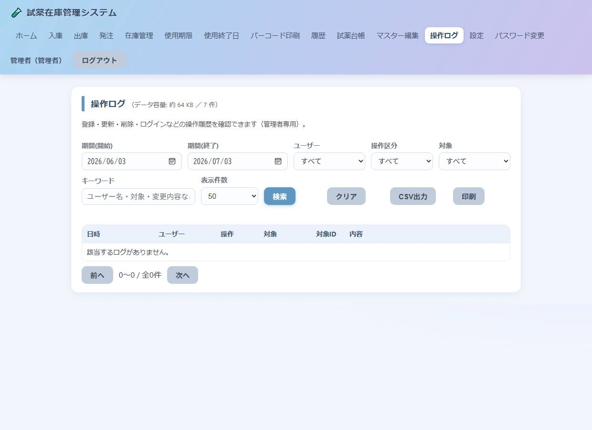
操作ログ画面
システムの操作履歴を確認します。管理者専用です。
- 記録される操作：登録・更新・削除・ログイン・印刷・CSV出力・バーコード印刷 など。
- 絞り込み：期間・ユーザー・操作区分・対象・キーワード。
- 詳細：各行の「詳細」で変更前／変更後の内容を確認できます。
- CSV出力／印刷：現在の絞り込み条件で出力できます。
- データ容量：画面上部にログのおおよそのデータ容量と件数を表示します。
16. 設定（管理者）
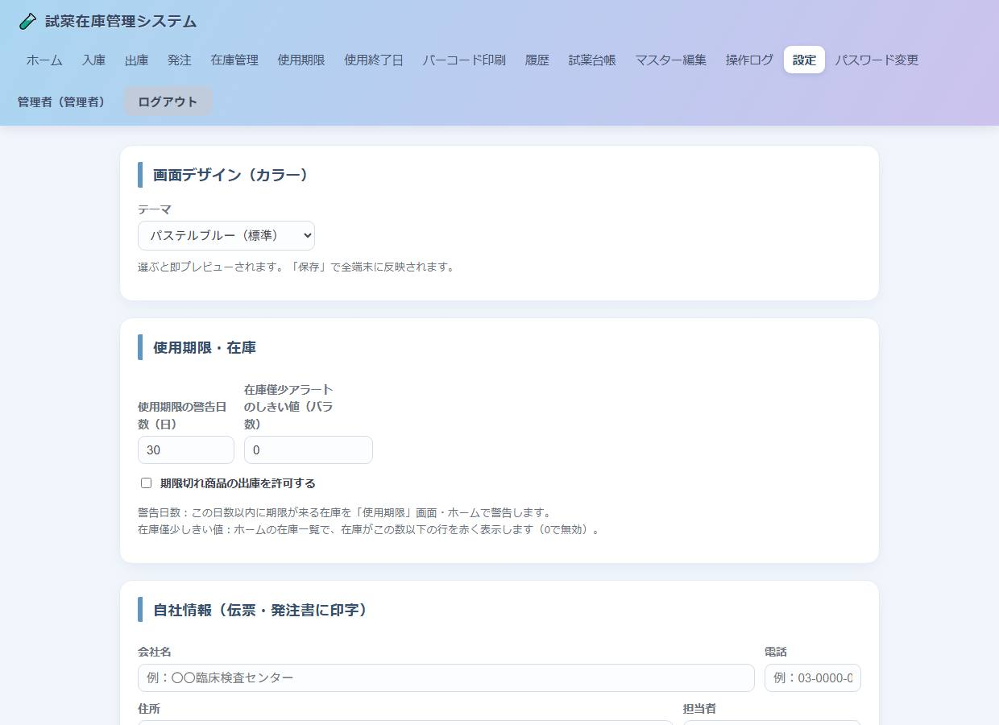
設定画面
システム全体の設定を行います。管理者専用です。
| 設定項目 | 内容 |
|---|
| 画面テーマ | パステル系のカラーテーマを選択します。 |
| 使用期限の警告日数 | 期限間近と判定する日数。 |
| 在庫僅少しきい値 | 在庫が少ないと判定する基準。 |
| 期限切れ出庫の許可 | 期限切れ試薬の出庫可否。 |
| 自社情報 | 会社名・住所・電話番号・担当者（帳票ヘッダーに使用）。 |
| バーコードラベル | ラベルサイズ、各文字サイズ（バーコード情報／名称／ロット・期限・No.）。 |
17. パスワード変更
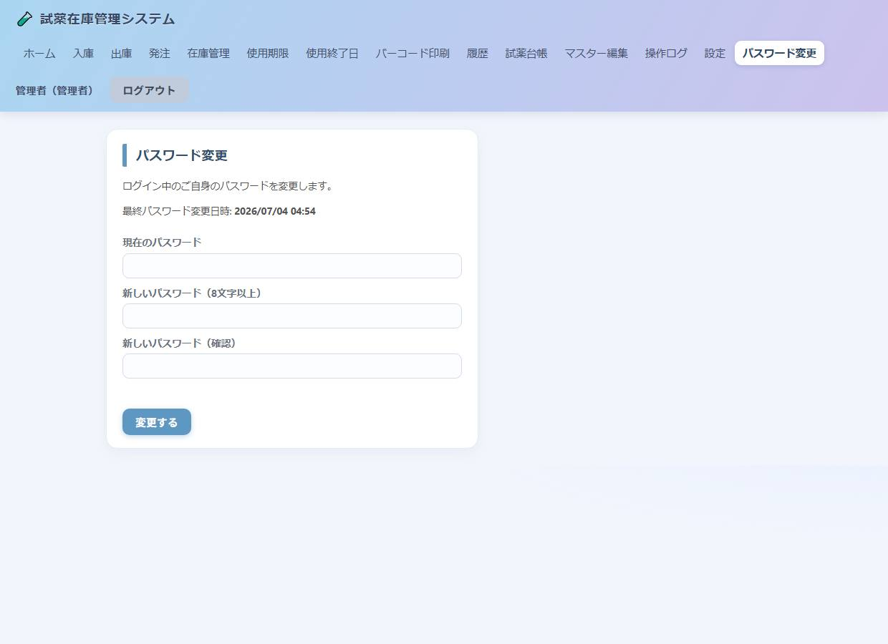
パスワード変更画面
ログイン中のご自身のパスワードを変更します。全ユーザーが使用できます。
- メニューの「パスワード変更」を開きます。
- 現在のパスワードを入力します。
- 新しいパスワード（8文字以上）と確認用を入力します。
- 「変更する」を押します。
変更すると「最終パスワード変更日時」が更新され、操作ログにも記録されます。
現在のパスワードと同じものには変更できません。新しいパスワードは8文字以上にしてください。
18. 用語集
| 用語 | 説明 |
|---|
| 独自バーコード | 入庫時に本システムが1本ごとに発行する管理用バーコード。削除しても番号は再利用しません。 |
| GS1-128 | メーカーが商品に付す標準バーコード。JAN・ロット・使用期限を含みます。 |
| 梱包数 / バラ数 | 梱包数は1箱の本数。バラ数は本単位の数量（梱包数×梱包）。 |
| 発注予定 | これから発注する未発注の明細。 |
| 入庫予定 | 発注済みで未入庫の残り分。入庫で自動的に消し込まれます。 |
| 精度管理対象 | 試薬管理台帳の出力対象となる商品。マスターで設定します。 |
| 保留 | 発注から一時的に外す状態。解除で戻せます。 |
19. 困ったときは（FAQ）
Q. 入庫画面で商品が追加できない
A. 先に「問屋」を選択してください。問屋を選ぶまで商品の追加はできません。
Q. 入庫予定（発注済み）の数が減らない
A. 手入力の入庫は、同じ商品・同じ問屋の古い発注から自動で消し込まれます。問屋が一致しているか、発注が「発注済み」かご確認ください。
Q. バーコード読取欄で日本語になってしまう
A. バーコード欄は半角固定です。それでも切り替わる場合は、端末側のIMEを半角英数にしてから読み取ってください。
Q. 印刷にプリンターを指定したい
A. 印刷はブラウザの印刷ダイアログで行います。ダイアログでプリンターを選択してください。ラベルはラベルプリンター、帳票は通常プリンターを指定します。
Q. 履歴から削除できない
A. 在庫やバーコードの整合性が保てない場合はブロックされます。画面の案内に従い、先に関連する出庫・発注などを取り消してください。
Q. パスワードを忘れた
A. 管理者が「マスター編集 → ユーザー」から再設定できます。
本書の内容は予告なく変更される場合があります。ご不明な点はシステム管理者または販売元までお問い合わせください。